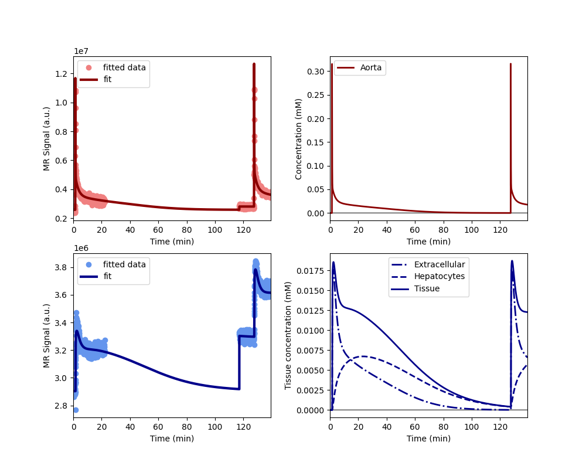

Note
Go to the end to download the full example code.
Clinical - rifampicin effect in subjects with impaired liver function#
The data show in this example aimed to demonstrates the effect of rifampicin on liver function of patients with impaired function. The use case is provided by the liver work package of the TRISTAN project which develops imaging biomarkers for drug safety assessment.
The data were acquired in the aorta and liver in 3 patients with dynamic gadoxetate-enhanced MRI. The study participants take rifampicin as part of their routine clinical workup, with an aim to promote their liver function. For this study, they were taken off rifampicin 3 days before the first scan, and placed back on rifampicin 3 days before the second scan. The aim was to determine the effect if rifampicin in uptake and excretion function of the liver.
The data confirmed that patients had significantly reduced uptake and excretion function in the absence of rifampicin. Rifampicin adminstration promoted their excretory function but had no effect on their uptake function.
Reference#
Manuscript in preparation..
Setup#
Model definition#
In order to avoid some repetition in this script, we define a function that returns a trained model for a single dataset with 2 scans:
def tristan_human_2scan(roi, par, **kwargs):
model = dc.AortaLiver2scan(
# Injection parameters
weight = par['weight'],
agent = 'gadoxetate',
dose = par['dose_1'],
dose2 = par['dose_2'],
rate = 1,
# Acquisition parameters
field_strength = 3,
t0 = par['t0'],
TR = par['TR'],
FA = par['FA_1'],
FA2 = par['FA_2'],
TS = roi['time_1'][1]-roi['time_1'][0],
# Signal parameters
R10a = 1/par['T1_aorta_1'],
R10l = 1/par['T1_liver_1'],
R102a = 1/par['T1_aorta_3'],
R102l = 1/par['T1_liver_3'],
# Tissue parameters
vol = par['liver_volume'],
)
xdata = (
roi['time_1'][roi['aorta_1_accept']] - roi['time_1'][0],
roi['time_2'][roi['aorta_2_accept']] - roi['time_1'][0],
roi['time_1'][roi['liver_1_accept']] - roi['time_1'][0],
roi['time_2'][roi['liver_2_accept']] - roi['time_1'][0],
)
ydata = (
roi['aorta_1'][roi['aorta_1_accept']],
roi['aorta_2'][roi['aorta_2_accept']],
roi['liver_1'][roi['liver_1_accept']],
roi['liver_2'][roi['liver_2_accept']],
)
model.train(xdata, ydata, **kwargs)
return xdata, ydata, model
Before running the full analysis on all cases, lets illustrate the results by fitting the baseline visit for the first subject. We use maximum verbosity to get some feedback about the iterations:
Iteration Total nfev Cost Cost reduction Step norm Optimality
0 1 1.2841e+15 2.82e+17
1 2 3.1276e+14 9.71e+14 3.15e+06 2.17e+17
2 3 1.3675e+14 1.76e+14 4.61e+06 1.67e+17
3 4 7.9008e+13 5.77e+13 4.37e+06 1.03e+17
4 5 5.8651e+13 2.04e+13 1.38e+06 1.25e+17
5 6 4.1743e+13 1.69e+13 2.89e+05 1.09e+17
6 7 3.1627e+13 1.01e+13 1.24e+04 7.94e+16
`xtol` termination condition is satisfied.
Function evaluations 7, initial cost 1.2841e+15, final cost 3.1627e+13, first-order optimality 7.94e+16.
Iteration Total nfev Cost Cost reduction Step norm Optimality
0 1 3.1152e+14 5.45e+14
1 2 6.4619e+13 2.47e+14 2.66e+06 1.24e+14
2 3 1.6642e+13 4.80e+13 9.88e+03 1.06e+14
`xtol` termination condition is satisfied.
Function evaluations 3, initial cost 3.1152e+14, final cost 1.6642e+13, first-order optimality 1.06e+14.
Iteration Total nfev Cost Cost reduction Step norm Optimality
0 1 4.8270e+13 7.97e+16
1 2 2.8963e+13 1.93e+13 1.09e+07 5.62e+16
2 3 2.4603e+13 4.36e+12 1.88e+06 6.19e+16
3 4 2.3178e+13 1.42e+12 3.57e+05 5.34e+16
4 5 2.2740e+13 4.38e+11 5.83e+04 4.61e+16
`xtol` termination condition is satisfied.
Function evaluations 5, initial cost 4.8270e+13, final cost 2.2740e+13, first-order optimality 4.61e+16.
Plot the results to check that the model has fitted the data. The plot also shows the concentration in the two liver compartments separately:
Print the measured model parameters and any derived parameters. Standard deviations are included as a measure of parameter uncertainty, indicate that all parameters are identified robustly:
model.print_params(round_to=3)
--------------------------------
Free parameters with their stdev
--------------------------------
Aorta second signal scale factor (S02a): 163286585.61 (263658.446) a.u.
Liver second signal scale factor (S02l): 107959241.632 (944770.548) a.u.
Second bolus arrival time (BAT2): 7641.273 (0.443) sec
First bolus arrival time (BAT): 76.792 (0.435) sec
Cardiac output (CO): 172.573 (2.078) mL/sec
Heart-lung mean transit time (Thl): 15.818 (0.571) sec
Heart-lung dispersion (Dhl): 0.473 (0.009)
Organs blood mean transit time (To): 30.691 (0.83) sec
Organs extraction fraction (Eo): 0.172 (0.005)
Organs extravascular mean transit time (Toe): 270.994 (19.275) sec
Body extraction fraction (Eb): 0.044 (0.003)
Liver extracellular volume fraction (ve): 0.2 (0.012) mL/cm3
Extracellular mean transit time (Te): 54.082 (4.59) sec
Extracellular dispersion (De): 0.831 (0.026)
Initial hepatocellular uptake rate (khe_i): 0.0 (0.0) mL/sec/cm3
Final hepatocellular uptake rate (khe_f): 0.0 (0.0) mL/sec/cm3
Initial hepatocellular mean transit time (Th_i): 926.384 (385.901) sec
Final hepatocellular mean transit time (Th_f): 1517.281 (1841.527) sec
----------------------------
Fixed and derived parameters
----------------------------
Hematocrit (H): 0.45
Hepatocellular mean transit time (Th): 1221.832 sec
Hepatocellular uptake rate (khe): 0.0 mL/sec/cm3
Biliary tissue excretion rate (Kbh): 0.001 mL/sec/cm3
Hepatocellular tissue uptake rate (Khe): 0.002 mL/sec/cm3
Biliary excretion rate (kbh): 0.001 mL/sec/cm3
Initial biliary excretion rate (kbh_i): 0.001 mL/sec/cm3
Final biliary excretion rate (kbh_f): 0.001 mL/sec/cm3
Liver blood clearance (CL): 0.35 mL/sec
Fit all data#
Now that we have illustrated an individual result in some detail, we proceed with fitting the data for all 3 patients, at baseline and rifampicin visit. We do not print output for these individual computations and instead store results in one single dataframe:
results = []
# Loop over all datasets
for subj in rois.keys():
for visit in rois[subj].keys():
roi = rois[subj][visit]
par = pars[subj][visit]
# Generate a trained model for the scan:
_, _, model = tristan_human_2scan(roi, par, xtol=1e-3)
# Export fitted parameters as lists
rows = model.export_params(type='list')
# Add visit and subject info
rows = [row + [visit, subj] for row in rows]
# Add to the list of all results
results += rows
# Combine all results into a single dataframe.
cols = ['parameter', 'name', 'value', 'unit', 'stdev',
'visit', 'subject']
results = pd.DataFrame(results, columns=cols)
# Print all results
print(results.to_string())
parameter name value unit stdev visit subject
0 S02a Aorta second signal scale factor 1.632866e+08 a.u. 2.636584e+05 control 001
1 S02l Liver second signal scale factor 1.079592e+08 a.u. 9.447705e+05 control 001
2 BAT2 Second bolus arrival time 7.641273e+03 sec 4.432600e-01 control 001
3 BAT First bolus arrival time 7.679155e+01 sec 4.350714e-01 control 001
4 CO Cardiac output 1.725733e+02 mL/sec 2.077570e+00 control 001
5 Thl Heart-lung mean transit time 1.581789e+01 sec 5.711453e-01 control 001
6 Dhl Heart-lung dispersion 4.728497e-01 8.677433e-03 control 001
7 To Organs blood mean transit time 3.069064e+01 sec 8.304487e-01 control 001
8 Eo Organs extraction fraction 1.715850e-01 5.219545e-03 control 001
9 Toe Organs extravascular mean transit time 2.709938e+02 sec 1.927540e+01 control 001
10 Eb Body extraction fraction 4.375584e-02 2.869370e-03 control 001
11 H Hematocrit 4.500000e-01 0.000000e+00 control 001
12 ve Liver extracellular volume fraction 1.998686e-01 mL/cm3 1.190225e-02 control 001
13 Te Extracellular mean transit time 5.408241e+01 sec 4.589613e+00 control 001
14 De Extracellular dispersion 8.312908e-01 2.604401e-02 control 001
15 khe_i Initial hepatocellular uptake rate 4.820300e-04 mL/sec/cm3 1.010929e-04 control 001
16 khe_f Final hepatocellular uptake rate 3.622122e-04 mL/sec/cm3 8.886465e-05 control 001
17 Th_i Initial hepatocellular mean transit time 9.263840e+02 sec 3.859014e+02 control 001
18 Th_f Final hepatocellular mean transit time 1.517281e+03 sec 1.841527e+03 control 001
19 Th Hepatocellular mean transit time 1.221832e+03 sec 0.000000e+00 control 001
20 khe Hepatocellular uptake rate 4.221211e-04 mL/sec/cm3 0.000000e+00 control 001
21 Kbh Biliary tissue excretion rate 8.184429e-04 mL/sec/cm3 0.000000e+00 control 001
22 Khe Hepatocellular tissue uptake rate 2.111993e-03 mL/sec/cm3 0.000000e+00 control 001
23 kbh Biliary excretion rate 6.548618e-04 mL/sec/cm3 0.000000e+00 control 001
24 kbh_i Initial biliary excretion rate 8.637146e-04 mL/sec/cm3 0.000000e+00 control 001
25 kbh_f Final biliary excretion rate 5.273457e-04 mL/sec/cm3 0.000000e+00 control 001
26 CL Liver blood clearance 3.500209e-01 mL/sec 0.000000e+00 control 001
27 S02a Aorta second signal scale factor 1.328103e+08 a.u. 5.846473e+05 drug 001
28 S02l Liver second signal scale factor 9.688988e+07 a.u. 9.548153e+05 drug 001
29 BAT2 Second bolus arrival time 6.904645e+03 sec 1.710079e-01 drug 001
30 BAT First bolus arrival time 7.979890e+01 sec 1.687411e-01 drug 001
31 CO Cardiac output 1.721139e+02 mL/sec 3.152113e+00 drug 001
32 Thl Heart-lung mean transit time 8.264760e+00 sec 2.712979e-01 drug 001
33 Dhl Heart-lung dispersion 5.218754e-01 1.019463e-02 drug 001
34 To Organs blood mean transit time 2.752833e+01 sec 9.750224e-01 drug 001
35 Eo Organs extraction fraction 1.222519e-01 5.434559e-03 drug 001
36 Toe Organs extravascular mean transit time 3.209690e+02 sec 2.949666e+01 drug 001
37 Eb Body extraction fraction 2.789956e-02 2.807268e-03 drug 001
38 H Hematocrit 4.500000e-01 0.000000e+00 drug 001
39 ve Liver extracellular volume fraction 1.421242e-01 mL/cm3 1.574084e-02 drug 001
40 Te Extracellular mean transit time 4.783043e+01 sec 7.656008e+00 drug 001
41 De Extracellular dispersion 7.576965e-01 5.673443e-02 drug 001
42 khe_i Initial hepatocellular uptake rate 5.044245e-04 mL/sec/cm3 1.387541e-04 drug 001
43 khe_f Final hepatocellular uptake rate 5.822585e-04 mL/sec/cm3 1.616184e-04 drug 001
44 Th_i Initial hepatocellular mean transit time 8.043769e+02 sec 3.424670e+02 drug 001
45 Th_f Final hepatocellular mean transit time 9.579056e+02 sec 8.400133e+02 drug 001
46 Th Hepatocellular mean transit time 8.811412e+02 sec 0.000000e+00 drug 001
47 khe Hepatocellular uptake rate 5.433415e-04 mL/sec/cm3 0.000000e+00 drug 001
48 Kbh Biliary tissue excretion rate 1.134892e-03 mL/sec/cm3 0.000000e+00 drug 001
49 Khe Hepatocellular tissue uptake rate 3.823005e-03 mL/sec/cm3 0.000000e+00 drug 001
50 kbh Biliary excretion rate 9.735963e-04 mL/sec/cm3 0.000000e+00 drug 001
51 kbh_i Initial biliary excretion rate 1.066510e-03 mL/sec/cm3 0.000000e+00 drug 001
52 kbh_f Final biliary excretion rate 8.955745e-04 mL/sec/cm3 0.000000e+00 drug 001
53 CL Liver blood clearance 4.750073e-01 mL/sec 0.000000e+00 drug 001
54 S02a Aorta second signal scale factor 1.882574e+08 a.u. 1.691088e+06 control 002
55 S02l Liver second signal scale factor 7.844688e+07 a.u. 2.974411e+06 control 002
56 BAT2 Second bolus arrival time 7.585136e+03 sec 8.029937e-01 control 002
57 BAT First bolus arrival time 8.501632e+01 sec 8.290006e-01 control 002
58 CO Cardiac output 1.758135e+02 mL/sec 3.654334e+00 control 002
59 Thl Heart-lung mean transit time 1.666173e+01 sec 1.033130e+00 control 002
60 Dhl Heart-lung dispersion 5.146619e-01 1.861645e-02 control 002
61 To Organs blood mean transit time 3.171744e+01 sec 1.038976e+00 control 002
62 Eo Organs extraction fraction 1.859614e-01 5.589371e-03 control 002
63 Toe Organs extravascular mean transit time 6.509501e+02 sec 3.903126e+01 control 002
64 Eb Body extraction fraction 1.193749e-02 3.665511e-03 control 002
65 H Hematocrit 4.500000e-01 0.000000e+00 control 002
66 ve Liver extracellular volume fraction 3.896929e-01 mL/cm3 2.920617e-02 control 002
67 Te Extracellular mean transit time 4.337504e+01 sec 4.792783e+00 control 002
68 De Extracellular dispersion 8.058836e-01 3.688731e-02 control 002
69 khe_i Initial hepatocellular uptake rate 2.460186e-03 mL/sec/cm3 4.084303e-04 control 002
70 khe_f Final hepatocellular uptake rate 2.120268e-03 mL/sec/cm3 1.474294e-04 control 002
71 Th_i Initial hepatocellular mean transit time 6.029080e+02 sec 7.314390e+02 control 002
72 Th_f Final hepatocellular mean transit time 1.383018e+04 sec 4.816187e+03 control 002
73 Th Hepatocellular mean transit time 7.216545e+03 sec 0.000000e+00 control 002
74 khe Hepatocellular uptake rate 2.290227e-03 mL/sec/cm3 0.000000e+00 control 002
75 Kbh Biliary tissue excretion rate 1.385705e-04 mL/sec/cm3 0.000000e+00 control 002
76 Khe Hepatocellular tissue uptake rate 5.877005e-03 mL/sec/cm3 0.000000e+00 control 002
77 kbh Biliary excretion rate 8.457055e-05 mL/sec/cm3 0.000000e+00 control 002
78 kbh_i Initial biliary excretion rate 1.012272e-03 mL/sec/cm3 0.000000e+00 control 002
79 kbh_f Final biliary excretion rate 4.412864e-05 mL/sec/cm3 0.000000e+00 control 002
80 CL Liver blood clearance 2.929624e+00 mL/sec 0.000000e+00 control 002
81 S02a Aorta second signal scale factor 1.662998e+08 a.u. 4.315369e+05 drug 002
82 S02l Liver second signal scale factor 1.039724e+08 a.u. 3.938801e+06 drug 002
83 BAT2 Second bolus arrival time 7.040979e+03 sec 1.800162e-01 drug 002
84 BAT First bolus arrival time 7.460534e+01 sec 1.854488e-01 drug 002
85 CO Cardiac output 1.419702e+02 mL/sec 1.934519e+00 drug 002
86 Thl Heart-lung mean transit time 2.146588e+01 sec 2.643157e-01 drug 002
87 Dhl Heart-lung dispersion 3.913142e-01 6.718867e-03 drug 002
88 To Organs blood mean transit time 2.214418e+01 sec 1.215683e+00 drug 002
89 Eo Organs extraction fraction 2.077079e-01 1.116015e-02 drug 002
90 Toe Organs extravascular mean transit time 1.860298e+02 sec 1.863163e+01 drug 002
91 Eb Body extraction fraction 8.817654e-02 3.672526e-03 drug 002
92 H Hematocrit 4.500000e-01 0.000000e+00 drug 002
93 ve Liver extracellular volume fraction 2.040219e-01 mL/cm3 1.953743e-02 drug 002
94 Te Extracellular mean transit time 4.962744e+01 sec 6.220009e+00 drug 002
95 De Extracellular dispersion 7.524833e-01 4.927369e-02 drug 002
96 khe_i Initial hepatocellular uptake rate 9.605064e-04 mL/sec/cm3 8.933224e-05 drug 002
97 khe_f Final hepatocellular uptake rate 2.666436e-03 mL/sec/cm3 2.504474e-04 drug 002
98 Th_i Initial hepatocellular mean transit time 9.437895e+03 sec 7.435618e+03 drug 002
99 Th_f Final hepatocellular mean transit time 9.924794e+02 sec 3.095791e+02 drug 002
100 Th Hepatocellular mean transit time 5.215187e+03 sec 0.000000e+00 drug 002
101 khe Hepatocellular uptake rate 1.813471e-03 mL/sec/cm3 0.000000e+00 drug 002
102 Kbh Biliary tissue excretion rate 1.917477e-04 mL/sec/cm3 0.000000e+00 drug 002
103 Khe Hepatocellular tissue uptake rate 8.888609e-03 mL/sec/cm3 0.000000e+00 drug 002
104 kbh Biliary excretion rate 1.526269e-04 mL/sec/cm3 0.000000e+00 drug 002
105 kbh_i Initial biliary excretion rate 8.433852e-05 mL/sec/cm3 0.000000e+00 drug 002
106 kbh_f Final biliary excretion rate 8.020096e-04 mL/sec/cm3 0.000000e+00 drug 002
107 CL Liver blood clearance 2.563188e+00 mL/sec 0.000000e+00 drug 002
108 S02a Aorta second signal scale factor 1.862461e+08 a.u. 3.712136e+05 control 003
109 S02l Liver second signal scale factor 1.250913e+08 a.u. 6.908284e+05 control 003
110 BAT2 Second bolus arrival time 6.850662e+03 sec 1.501683e-01 control 003
111 BAT First bolus arrival time 7.028508e+01 sec 1.266807e-01 control 003
112 CO Cardiac output 1.482700e+02 mL/sec 1.456552e+00 control 003
113 Thl Heart-lung mean transit time 1.250971e+01 sec 1.579453e-01 control 003
114 Dhl Heart-lung dispersion 2.833172e-01 2.891299e-03 control 003
115 To Organs blood mean transit time 3.126957e+01 sec 9.019442e-01 control 003
116 Eo Organs extraction fraction 1.749912e-01 7.080471e-03 control 003
117 Toe Organs extravascular mean transit time 2.266253e+02 sec 1.933431e+01 control 003
118 Eb Body extraction fraction 7.161903e-02 2.944341e-03 control 003
119 H Hematocrit 4.500000e-01 0.000000e+00 control 003
120 ve Liver extracellular volume fraction 3.274133e-01 mL/cm3 1.735971e-02 control 003
121 Te Extracellular mean transit time 5.979239e+01 sec 4.391825e+00 control 003
122 De Extracellular dispersion 9.008297e-01 1.336760e-02 control 003
123 khe_i Initial hepatocellular uptake rate 1.107121e-03 mL/sec/cm3 9.981758e-05 control 003
124 khe_f Final hepatocellular uptake rate 3.091978e-03 mL/sec/cm3 1.516869e-04 control 003
125 Th_i Initial hepatocellular mean transit time 2.434978e+03 sec 6.620161e+02 control 003
126 Th_f Final hepatocellular mean transit time 6.003804e+02 sec 7.102712e+01 control 003
127 Th Hepatocellular mean transit time 1.517679e+03 sec 0.000000e+00 control 003
128 khe Hepatocellular uptake rate 2.099549e-03 mL/sec/cm3 0.000000e+00 control 003
129 Kbh Biliary tissue excretion rate 6.589009e-04 mL/sec/cm3 0.000000e+00 control 003
130 Khe Hepatocellular tissue uptake rate 6.412536e-03 mL/sec/cm3 0.000000e+00 control 003
131 kbh Biliary excretion rate 4.431680e-04 mL/sec/cm3 0.000000e+00 control 003
132 kbh_i Initial biliary excretion rate 2.762189e-04 mL/sec/cm3 0.000000e+00 control 003
133 kbh_f Final biliary excretion rate 1.120268e-03 mL/sec/cm3 0.000000e+00 control 003
134 CL Liver blood clearance 2.090544e+00 mL/sec 0.000000e+00 control 003
135 S02a Aorta second signal scale factor 2.054986e+08 a.u. 5.597670e+05 drug 003
136 S02l Liver second signal scale factor 1.278214e+08 a.u. 4.813088e+05 drug 003
137 BAT2 Second bolus arrival time 7.323074e+03 sec 1.454085e-01 drug 003
138 BAT First bolus arrival time 6.827140e+01 sec 1.530142e-01 drug 003
139 CO Cardiac output 1.889740e+02 mL/sec 3.093162e+00 drug 003
140 Thl Heart-lung mean transit time 1.433676e+01 sec 2.500115e-01 drug 003
141 Dhl Heart-lung dispersion 3.813946e-01 7.301855e-03 drug 003
142 To Organs blood mean transit time 2.093434e+01 sec 1.092181e+00 drug 003
143 Eo Organs extraction fraction 1.660923e-01 1.017878e-02 drug 003
144 Toe Organs extravascular mean transit time 1.871734e+02 sec 1.960309e+01 drug 003
145 Eb Body extraction fraction 3.293534e-02 2.653356e-03 drug 003
146 H Hematocrit 4.500000e-01 0.000000e+00 drug 003
147 ve Liver extracellular volume fraction 2.623260e-01 mL/cm3 2.812384e-02 drug 003
148 Te Extracellular mean transit time 5.991617e+01 sec 9.896264e+00 drug 003
149 De Extracellular dispersion 8.822647e-01 3.928749e-02 drug 003
150 khe_i Initial hepatocellular uptake rate 4.189590e-04 mL/sec/cm3 2.469740e-04 drug 003
151 khe_f Final hepatocellular uptake rate 2.710768e-04 mL/sec/cm3 3.335262e-04 drug 003
152 Th_i Initial hepatocellular mean transit time 6.816298e+02 sec 5.081504e+02 drug 003
153 Th_f Final hepatocellular mean transit time 7.154843e+02 sec 1.738251e+03 drug 003
154 Th Hepatocellular mean transit time 6.985571e+02 sec 0.000000e+00 drug 003
155 khe Hepatocellular uptake rate 3.450179e-04 mL/sec/cm3 0.000000e+00 drug 003
156 Kbh Biliary tissue excretion rate 1.431522e-03 mL/sec/cm3 0.000000e+00 drug 003
157 Khe Hepatocellular tissue uptake rate 1.315226e-03 mL/sec/cm3 0.000000e+00 drug 003
158 kbh Biliary excretion rate 1.055997e-03 mL/sec/cm3 0.000000e+00 drug 003
159 kbh_i Initial biliary excretion rate 1.082221e-03 mL/sec/cm3 0.000000e+00 drug 003
160 kbh_f Final biliary excretion rate 1.031013e-03 mL/sec/cm3 0.000000e+00 drug 003
161 CL Liver blood clearance 3.490520e-01 mL/sec 0.000000e+00 drug 003
Plot individual results#
Now lets visualise the main results from the study by plotting the drug
effect for all volunteers, and for both biomarkers: uptake rate khe
and excretion rate kbh:
# Set up the figure
clr = ['tab:blue', 'tab:orange', 'tab:green', 'tab:red', 'tab:purple',
'tab:brown', 'tab:pink', 'tab:gray', 'tab:olive', 'tab:cyan']
fs = 10
fig, (ax1, ax2) = plt.subplots(1, 2, figsize=(8,3))
fig.subplots_adjust(wspace=0.5)
ax1.set_title('Hepatocellular uptake rate', fontsize=fs, pad=10)
ax1.set_ylabel('khe (mL/min/100mL)', fontsize=fs)
ax1.set_ylim(0, 60)
ax1.tick_params(axis='x', labelsize=fs)
ax1.tick_params(axis='y', labelsize=fs)
ax2.set_title('Biliary excretion rate', fontsize=fs, pad=10)
ax2.set_ylabel('kbh (mL/min/100mL)', fontsize=fs)
ax2.set_ylim(0, 10)
ax2.tick_params(axis='x', labelsize=fs)
ax2.tick_params(axis='y', labelsize=fs)
# Pivot data for both visits to wide format for easy access:
v1 = pd.pivot_table(results[results.visit=='control'], values='value',
columns='parameter', index='subject')
v2 = pd.pivot_table(results[results.visit=='drug'], values='value',
columns='parameter', index='subject')
# Plot the rate constants in units of mL/min/100mL
for s in v1.index:
x = ['control']
khe = [6000*v1.at[s,'khe']]
kbh = [6000*v1.at[s,'kbh']]
if s in v2.index:
x += ['drug']
khe += [6000*v2.at[s,'khe']]
kbh += [6000*v2.at[s,'kbh']]
color = clr[int(s)-1]
ax1.plot(x, khe, '-', label=s, marker='o', markersize=6, color=color)
ax2.plot(x, kbh, '-', label=s, marker='o', markersize=6, color=color)
plt.show()
# Choose the last image as a thumbnail for the gallery
# sphinx_gallery_thumbnail_number = -1
Total running time of the script: (6 minutes 50.949 seconds)